![A picture of me]()
Salt Lake City, UT 84112
I'm looking for students to join my group! If you're excited about graphics and geometry processing and plan on applying to PhD programs this fall, please reach out!
I am an assistant professor in the Kahlert School of Computing at the University of Utah. I design algorithms for reliably and efficiently processing geometric data, drawing inspiration from topology and differential geometry. Previously I was a postdoc at École Polytechnique, working with Mathieu Desbrun. I received my PhD from Carnegie Mellon University, where I was advised by Keenan Crane. Before that, I was an undergraduate at Caltech, where I worked on plasma simulation with Peter Schröder, chromosomal shape embeddings with Mathieu Desbrun, and interval analysis root finding techniques with Alan Barr.
In my spare time, I like to design origami models and knit.
Teaching
News
- Aug. 2026I will be an invited speaker at Discrete Geometric Structures 2026 in Vienna.
- July 2026I am starting as an assistant professor at the University of Utah's Kahlert School of Computing!
- May 2026Implicit Minimal Surfaces for Bijective Correspondences was awarded a Best Paper Honorable Mention at Siggraph 2026!
- Spring 2026I will be attending Curves and Surfaces 2026 in Saint-Malo; New Mathematical Methods in Geometry Processing in Bonn; SGP 2026 in Bern and Siggraph 2026 in Los Angeles. If you're planning on attending any of them and want to meet up, let me know!
- Dec. 2025This year I will be serving on the papers committees for SIGGRAPH 2026 & SGP 2026, and serving as graduate school chair for SGP 2026.
- Jul. 2025This summer, I will be attending SGP 2025 in Bilbao and Siggraph 2025 in Vancouver.
- Feb. 2025I am attending the MFO Workshop on Mathematical Imaging and Surface Processing at Oberwolfach.
- Apr. 2024I accepted an assistant professor position at the University of Utah's Kahlert School of Computing! I will start in fall 2026.
- Dec. 2024I will serve on the program committee for the 2025 Symposium on Geometry Processing (SGP).
- Sept. 2024I started a postdoc with Mathieu Desbrun at École Polytechnique.
- Aug. 2024Ray Tracing Harmonic Functions and Solid Knitting were both awarded Best Paper Honorable Mentions at Siggraph 2024.
- May 2024I defended my PhD thesis at CMU.
- Aug. 2023I was invited to attend the geometry workshop in Obergurgl, which was relocated to Innsbruck due to flooding in Ötztal valley.
- Apr. 2019The National Science Foundation awarded me a Graduate Research Fellowship.
| 2026 | SIGGRAPH Best Paper Award Honorable Mention |
| Awarded to 10 papers out of 922 submissions; ~top 1.5% of papers | |
| 2024 | Two SIGGRAPH Best Paper Award Honorable Mentions |
| Awarded to 12 papers out of about 840 submissions; ~1.5% of papers. | |
| 2019 | NSF Graduate Research Fellowship |
| Awarded to top 15% of applicants across all areas of science; $147,000 over 3 years. | |
| 2019 | Hertz Fellowship Finalist |
| Awarded to top 5% of applicants across applied science, math, and engineering. See here for details. | |
| 2017 | SIGGRAPH ACM Turing Award Celebration Grant |
| Awarded by SIGGRAPH to 10 students to attend the ACM Turing Award Celebration. | |
| 2017, 2016 | Arthur R. Adams SURF Fellowship |
| Summer research fellowship. |
| Aug. 2025 | Implicit Minimal Surfaces for Bijective Correspondences,Discrete Geometric Structures 2026 |
| pdf (35 mb) keynote file (400 mb) poster (980 kb) | |
| May. 2025 | Implicit Minimal Surfaces for Bijective Correspondences,Geometric Computing Laboratory, EPFL |
| May. 2025 | Implicit Minimal Surfaces for Bijective Correspondences,Interactive Geometry Lab, ETH Zurich |
| Apr. 2025 | Implicit Minimal Surfaces for Bijective Correspondences,Paris Shape Seminar, INRIA Paris |
| Apr. 2025 | Implicit Minimal Surfaces for Bijective Correspondences,IPAB Visitor Seminar, University of Edinburgh |
| Mar. 2025 | Implicit Minimal Surfaces for Bijective Correspondences,University of Utah Graphics Seminar |
| May 2025 | Geometry Processing with Intrinsic Triangulations,GeomeriX Seminar, Inria Saclay |
| Apr. 2025 | Geometry Processing with Intrinsic Triangulations,CGAL Developer Meeting |
| pdf (25 mb) keynote file (240 mb) | |
| Apr. 2025 | Ray Tracing Harmonic Functions,CGAL Developer Meeting |
| pdf (28 mb) keynote file (340 mb) | |
| Feb. 2025 | New Foundations for Robust Geometry Processing,University of Utah |
| pdf (107 mb) keynote file (872 mb) | |
| Feb. 2025 | Ray Tracing Harmonic Functions,Oberwolfach Workshop on Mathematical Imaging and Surface Processing |
| video (30 min) pdf (31 mb) keynote file (1 gb) | |
| Nov. 2024 | Solid Knitting and Harmonic Hitting,Institute of Science and Technology Austria (ISTA) |
| pdf (38 mb) keynote file (1 gb) | |
| Aug. 2024 | Ray Tracing Harmonic Functions,ACM SIGGRAPH Technical Papers |
| video (10 min) | |
| Apr. 2024 | Evolving Intrinsic Triangulations,Carnegie Mellon University (CMU) |
| pdf (76 mb) keynote file (0.8 gb) | |
| Dec. 2023 | Dynamic Intrinsic Geometry Processing,Carnegie Mellon University (CMU) |
| pdf (79 mb) | |
| Sept. 2023 | Intrinsic Triangulations in Geometry Processing,Institute of Science and Technology Austria (ISTA) |
| Aug. 2023 | Intrinsic Triangulations in Geometry Processing,Geometry Workshop in Obergurgl |
| Jul. 2023 | Intrinsic Triangulations in Geometry Processing,TU Berlin SFB TRR 109 Colloquium |
| pdf (49 mb) | |
| Apr. 2022 | Discrete Conformal Equivalence of Polyhedral Surfaces,UCSD Pixel Cafe |
| pdf (32 mb) | |
| Mar. 2022 | Discrete Conformal Equivalence of Polyhedral Surfaces,Toronto Geometry Colloquium |
| pdf (19 mb) poster (8 mb) | |
| Dec. 2021 | Integer Coordinates for Intrinsic Geometry Processing,ACM SIGGRAPH Asia Technical Papers |
| video (20 min) video (5 min) | |
| Aug. 2021 | Discrete Conformal Equivalence of Polyhedral Surfaces,ACM SIGGRAPH Technical Papers |
| video (20 min) video (5 min) | |
| Oct. 2019 | Origami and Geometry,Carnegie Mellon University Graphics Lab |
| pdf (37 mb) | |
| Aug. 2021 | Geometry Processing with Intrinsic Triangulations,ACM SIGGRAPH 2021 Courses |
| video (3 hours) | |
| Jun. 2021 | Geometry Processing with Intrinsic Triangulations,SIAM IMR 2021 Courses |
{kind=link}
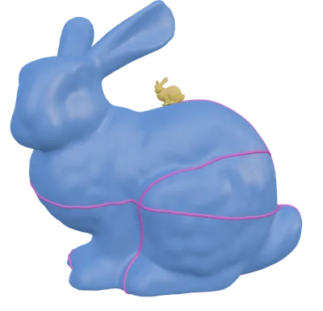
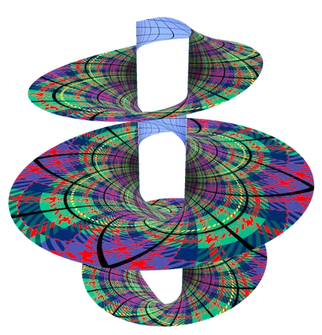
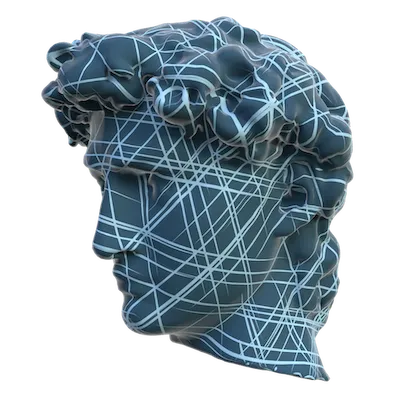
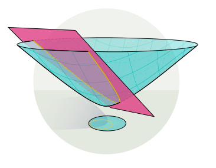
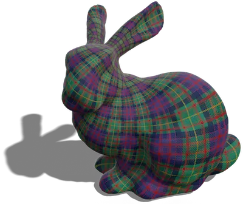
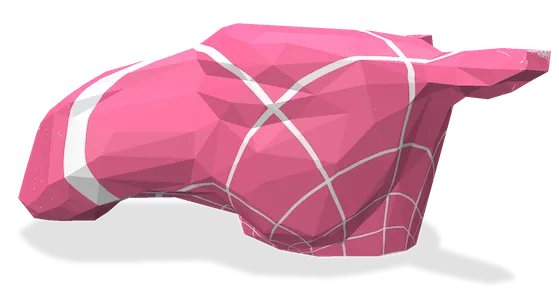
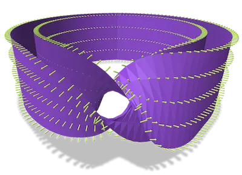
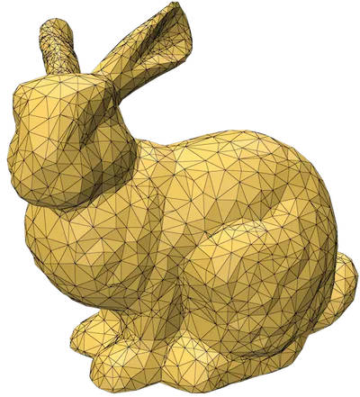
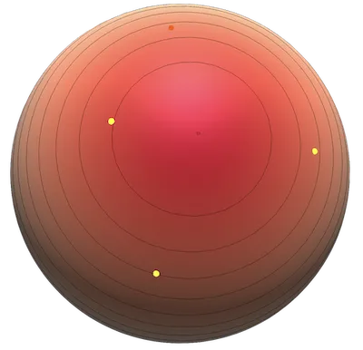
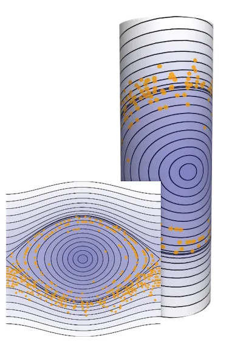
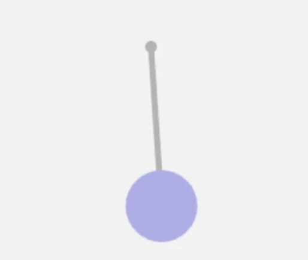
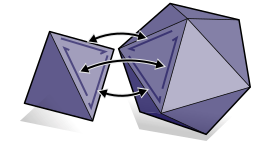
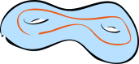